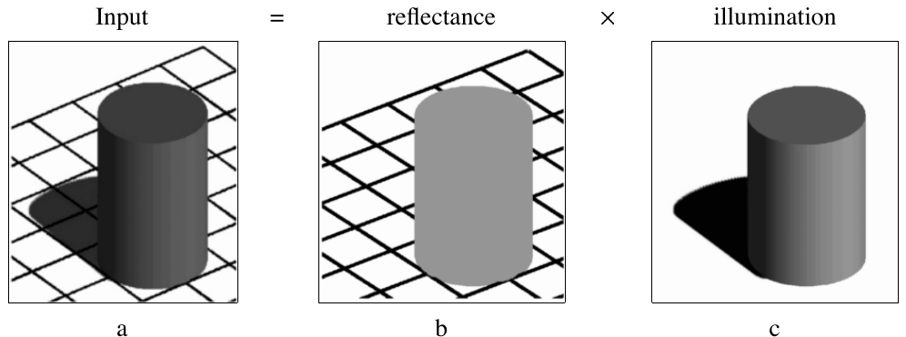
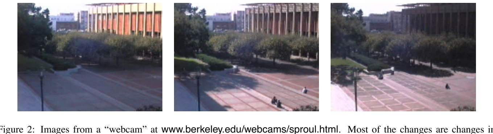
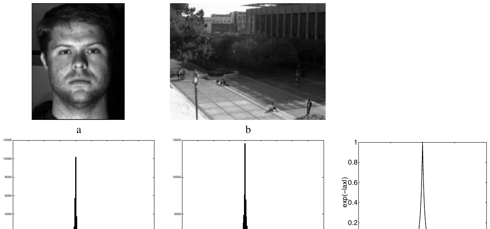
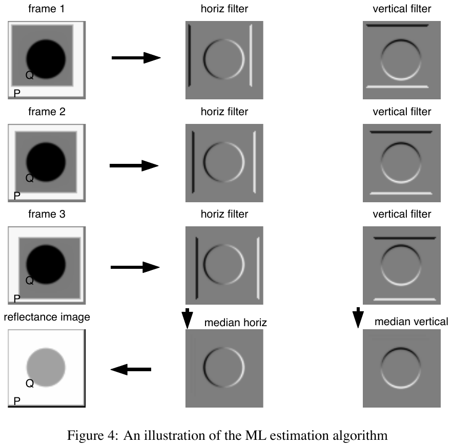
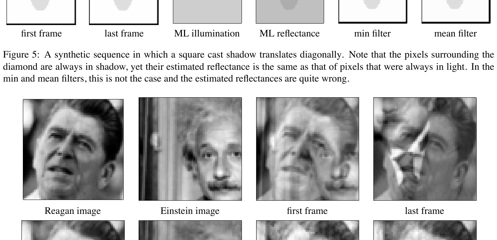
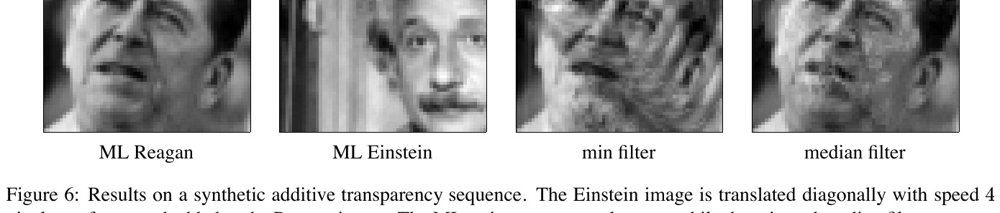
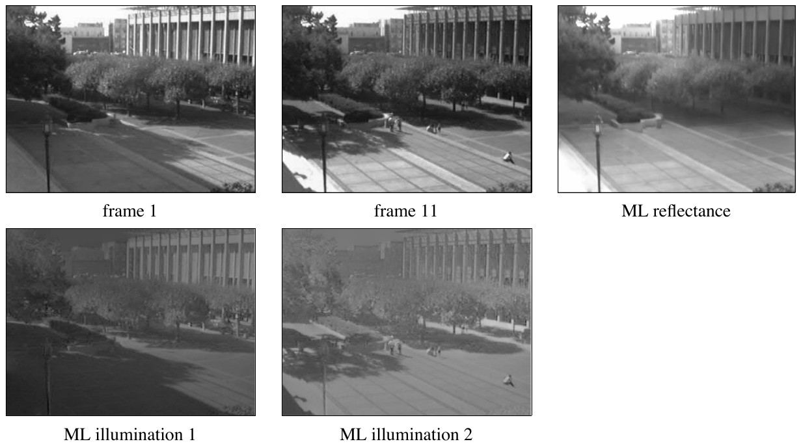
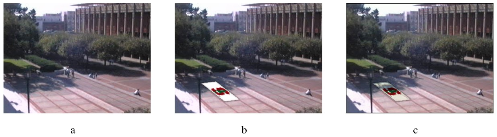

A full walk-through of Yair Weiss' classic ICCV 2001 paper. Every block of the original paper is quoted verbatim in a teal box, followed by a from-zero explanation and, wherever possible, a live demo you can play with. The big idea: if you have many photos of the same scene under changing light, a simple median can peel the shadows off and leave the true paint of the objects behind.
In: Proc ICCV (2001)
Deriving intrinsic images from image sequences
Yair Weiss
Computer Science Division
UC Berkeley
Berkeley, CA 94720-1776
yweiss@cs.berkeley.edu
Abstract
Intrinsic images are a useful midlevel description of scenes proposed by Barrow and Tenenbaum [1]. An image is decomposed into two images: a reflectance image and an illumination image. Finding such a decomposition remains a difficult problem in computer vision. Here we focus on a slightly easier problem: given a sequence of $T$ images where the reflectance is constant and the illumination changes, can we recover $T$ illumination images and a single reflectance image? We show that this problem is still ill-posed and suggest approaching it as a maximum-likelihood estimation problem. Following recent work on the statistics of natural images, we use a prior that assumes that illumination images will give rise to sparse filter outputs. We show that this leads to a simple, novel algorithm for recovering reflectance images. We illustrate the algorithm's performance on real and synthetic image sequences.
What is an “intrinsic image”? Any photo you take is really two things multiplied together:
Your camera only records the product of the two (light × paint). Splitting a single photo back into “paint” and “light” is called finding the intrinsic images, and it’s genuinely hard — there are always two unknowns (paint, light) for every one number the camera measured.
The easier problem this paper solves. Instead of one photo, take many photos of the same fixed scene while the lighting changes (think of a webcam pointed at a plaza all day). The paint never moves; only the shadows do. Weiss shows that even this is technically “ill-posed” (under-determined), but with one gentle statistical assumption it becomes a one-line recipe: at each pixel, look at how it changes across all the frames, and take the median. That single trick strips the shadows away.
Words to keep: ill-posed = more unknowns than equations, so infinitely many answers fit. Maximum-likelihood (ML) = pick the answer that makes the observed data most probable. Sparse filter outputs = when you measure how neighbouring pixels differ, the answer is “zero” almost everywhere (explained in Figure 3 below).
Drag the light/shadow. Watch the left panel (what the camera sees) change, while the middle panel (reflectance / paint) never moves. That fixed middle image is the prize we want to recover.
Barrow and Tenenbaum (1978) introduced the term “intrinsic images” to refer to a midlevel decomposition of the sort depicted in figure 1. The observed image is a product of two images: an illumination image and a reflectance image. We call this a midlevel description because it falls short of a full, 3D description of the scene: the intrinsic images are viewpoint dependent and the physical causes of changes in illumination at different points are not made explicit (e.g. the cast shadow versus the attached shadows in figure 1c).
Barrow and Tenenbaum argued that such a midlevel description, despite not making explicit all the physical causes of image features, can be extremely useful for supporting a range of visual inferences. For example, the task of segmentation may be poorly defined on the input image and many segmentation algorithms make use of arbitrary thresholds in order to avoid being fooled by illumination changes. On the intrinsic, reflectance image, on the other hand, even primitive segmentation algorithms would correctly segment the cylinder as a single segment in figure 1b. Similarly, view-based template matching and shape-from-shading would be significantly less brittle if they could work on the intrinsic image representation rather than on the input image.

Figure 1: The intrinsic image decomposition [1]. (a) Input = (b) reflectance × (c) illumination — a shaded cylinder standing on a checkered floor.
Who started this? Barrow & Tenenbaum, back in 1978, said: don’t jump straight from a photo to a full 3-D model of the world — that’s too hard. Stop at a useful halfway point (“midlevel”): split the photo into paint and light. It’s only “halfway” because it still depends on where you stand (viewpoint) and it doesn’t explain why the light is the way it is.
Two kinds of shadow (worth knowing): an attached shadow is the dark side of an object simply because it faces away from the light (the far side of the cylinder). A cast shadow is the dark patch an object throws onto another surface (the cylinder’s shadow on the floor). Both are “illumination,” not “paint.”
Why bother splitting? Loads of vision tasks get much easier on the paint-only image:
Recovering two intrinsic images from a single input image remains a difficult problem for computer vision systems. This is a classic ill-posed problem: the number of unknowns is twice the number of equations. Denoting by $I(x,y)$ the input image and by $R(x,y)$ the reflectance image and $L(x,y)$ the illumination image, the three images are related by:
Obviously, one can always set $L(x,y) = 1$ and satisfy the equations by setting $R(x,y) = I(x,y)$. Despite this difficulty, some progress has been made towards achieving this decomposition. Land and McCann's Retinex algorithm [7] could successfully decompose scenes in which the reflectance image was piecewise constant. This algorithm has been continuously extended over the years (e.g. [4]). More recently, Freeman and Viola [3] have used a wavelet prior to classify images into one of two classes: all reflectance or all illumination.
Why one photo is impossible. Equation (1) says every pixel is light × paint. But the camera hands you only the product. That’s one equation with two unknowns per pixel — like being told “two numbers multiply to 12” and asked which two. It could be 3×4, or 2×6, or 12×1… Mathematicians call this ill-posed: infinitely many answers all fit perfectly.
The laziest answer. You could declare “there’s no lighting at all” ($L=1$ everywhere) and blame every pixel entirely on paint ($R=I$). It fits equation (1) exactly — and it’s useless, because it keeps every shadow baked into the “paint.” To do better you need an extra assumption about what real light or real paint tends to look like.
Earlier attempts. Retinex (Land & McCann) assumed paint comes in flat patches (“piecewise constant”) so any smooth gradient must be lighting. Freeman & Viola trained a model to guess whether a given edge was caused by paint or by light. Both are clever but limited.
The camera measured one gray value $I$. Slide the reflectance $R$: the illumination automatically becomes $L = I/R$. Every setting reproduces the exact same input — that’s the ambiguity. Nothing in a single pixel tells you which split is “right.”
In this paper we focus on a slightly easier version of the problem. Given a sequence of $T$ images $\{I(x,y,t)\}_{t=1}^{T}$ in which the reflectance is constant over time and only the illumination changes, can we then solve for a single reflectance image $R(x,y)$ and $T$ illumination images $\{L(x,y,t)\}_{t=1}^{T}$ ? Our work was motivated by the ubiquity of image sequences of this form on the world wide web: “webcam” pictures from outdoor scenes as in figure 2. The camera is stationary and the scene is mostly stationary: the predominant change in the sequence are changes in illumination.
While this problem seems easier, it is still completely ill-posed: at every pixel there are $T$ equations and $T + 1$ unknowns. Again, one can simply set $L(x,y) = 1$ and $R(x,y,t) = I(x,y,t)$ and fully satisfy the equations. Obviously, some additional constraints are needed.

Figure 2: Images from a “webcam” at www.berkeley.edu/webcams/sproul.html. Most of the changes are changes in illumination. Can we use such image sequences to derive intrinsic images?
The clever set-up. Bolt a camera down and grab $T$ frames of the same scene as the light keeps changing — exactly what an outdoor webcam does over a day. Because the camera and objects never move, the paint image $R(x,y)$ is the same in every frame. Only the lighting $L(x,y,t)$ changes with time $t$.
Count the unknowns. At one pixel you now have $T$ measurements (one per frame). But you still have $T$ unknown light values (one per frame) plus 1 unknown paint value = $T+1$ unknowns. Always one more unknown than equations — so it’s still ill-posed, and the lazy “$L=1$, paint = everything” answer still sneaks in. Having many frames helped, but not quite enough by itself. We need one more nudge (coming in Section 2).
Intuition to hold onto: across the frames, the paint stays put and the shadows slide around. The paint is the part that’s consistent over time; the lighting is the part that flickers. That single observation is the seed of the whole method.
One version of this problem that has received much attention is the case when $L(x,y,t)$ are attached shadows of a single, convex, lambertian surface: $L(x,y,t) = \vec{N}(x,y)\cdot \vec{S}(t)$, with $N(x,y)$ the surface normal at $x,y$ and $\vec{S}$ a vector in the direction of the light source. This is the photometric stereo problem with unknown light-source, and can be solved using SVD techniques up to a Generalized Bas Relief ambiguity [12, 6].
Farid and Adelson addressed a special case of this problem [2]. They assumed that $L(x,y,t) = \alpha(t) L(x,y)$, i.e. that all illumination images are related by a scalar. They used independent component analysis to solve for $L(x,y)$ and $R(x,y)$.
A similar problem has recently been addressed by Szeliski, Avidan and Anandan [11]. They dealt with additive transparency sequences so that $I(x,y,t) = R(x,y) + L(x - t v_x, y - t v_y, t)$. Of course, if we exponentiate both sides we get equation 1 with an additional constraint that the illumination images are warped images of a single illumination image. They showed that since $L(x,y,t)$ is bounded below (i.e. that $L(x,y,t)$ is positive), setting $\hat{R}(x,y) = \min_t I(x,y,t)$ can give a good estimate for the reflectance. They used the min filter as an initialization for a second estimation procedure that estimated the motion of $L(x,y)$ and improved the estimate.
In this paper we take a different approach. We formulate the problem as a maximum-likelihood estimation problem based on the assumption that derivative-like filter outputs applied to $L$ will tend to be sparse. We derive the ML estimator under this assumption and show that it gives a simple, novel algorithm for recovering reflectance. We illustrate the algorithm's performance on real and synthetic image sequences.
This paragraph is a tour of other people’s tricks for adding the “missing constraint,” each buying tractability by assuming something specific about the light:
Weiss’ own move (the punchline of the intro): don’t assume any of those specific light models. Instead assume only a generic statistical fact about lighting — that “edge detector” responses to the lighting image are mostly zero (sparse). Then find the paint image that is most likely given the data. That single idea produces the median recipe.
For convenience, we work here in the log domain. Denote by $i(x,y), r(x,y), l(x,y,t)$ the logarithms of the input, reflectance and illumination images. We are given: $i(x,y,t) = r(x,y) + l(x,y,t)$ and wish to recover $r(x,y)$ and $l(x,y,t)$.
To make the problem solvable, we want to assume a distribution over $l(x,y,t)$. Our first thought was to make a similar assumption to that made in the Retinex work: that illumination images are lower contrast than reflectance images. We found, however, that while this may hold true in the Mondrian world studied by Land and McCann, it is rarely true for the outdoor scenes of the type shown in figure 2. Edges due to illumination often have as high a contrast as those due to reflectance changes.
The log trick. Multiplication is awkward; addition is easy. So take the logarithm of every pixel. Because $\log(a\times b)=\log a+\log b$, equation (1) turns from a product $I = L\cdot R$ into a clean sum:
Lower-case $i, r, l$ just mean “log of $I, R, L$.” Now the observed frame is paint plus light, and the whole problem becomes linear (sums are far friendlier to statistics and filters).
What assumption to add? The old Retinex idea was “lighting is gentle / low-contrast, so any sharp edge must be paint.” Weiss tested this on real outdoor webcams and found it false: the edge of a hard cast shadow can be just as sharp and high-contrast as the edge between two differently painted surfaces. (“Mondrian world” = the artificial scenes of flat colored rectangles, like a Mondrian painting, that Retinex was designed for.) So a better, more honest assumption is needed.
We use a weaker, more generic prior that is motivated by recent work on the statistics of natural images. A remarkably robust property of natural images that has received much attention lately is the fact that when derivative filters are applied to natural images, the filter outputs tend to be sparse [8, 10]. Figure 3 illustrates this fact: the image of the face and the outdoor scene have similar histograms that are peaked at zero and fall off much faster than a Gaussian. This property is robust enough that it continues to hold if we apply a pixelwise log function to each image (the histograms shown are actually for the log images). These prototypical histograms can be well fit by a Laplacian distribution $P(x) = \frac{1}{Z}e^{-\alpha|x|}$ (although better fits are obtained with richer models). Figure 3e shows a Laplacian distribution.
We will therefore assume that when derivative filters are applied to $l(x,y,t)$ the resulting filter outputs are sparse: more exactly, we will assume the filter outputs are independent over space and time and have a Laplacian density. Assume we have $N$ filters $\{f_n\}$ we denote the filter outputs by $o_n(x,y,t) = i \star f_n$. We use $r_n$ to denote the reflectance image filtered by the $n$th filter $r_n = r \star f_n$.

Figure 3: We use a prior motivated by recent work on the statistics of natural scenes. Derivative filter outputs tend to be sparse for a wide range of images. a-b images : c-d histograms of horizontal derivative filter outputs. e A Laplcian distribution. Note the similar shape to the observed histograms.
What is a “derivative filter”? It’s a tiny edge detector: at each pixel it computes the difference between neighbours, e.g. (pixel on the right) − (pixel here). Where the image is smooth, neighbours are nearly equal, so the difference is ≈ 0. Only at an edge does it spit out a big number.
What does “sparse” mean? If you make a histogram of all those differences across a real photo, you get a giant spike at zero (most places are flat) and only a few large values (the edges). That tall-spike-with-long-thin-tails shape is called a Laplacian distribution, $P(x)=\tfrac1Z e^{-\alpha|x|}$. Compare it to a bell-curve (Gaussian): the Laplacian is far pointier at 0 and has heavier tails. This “sparse edges” fact holds for almost every natural image — faces, streets, forests — which is exactly why it makes a trustworthy, generic assumption.
The key assumption, stated plainly: run those edge filters on the lighting image $l$, and the outputs are sparse too — mostly zero. In words: lighting is smooth almost everywhere, with only occasional sharp shadow edges. Notation to keep: $\star$ means “filter / convolve with,” $o_n = i\star f_n$ is filter $n$ applied to the observed frame, and $r_n = r\star f_n$ is that same filter applied to the (unknown) paint image.
Left: the two bell shapes. Teal = Laplacian $\frac1Z e^{-\alpha|x|}$ (pointy, heavy tails) vs. blue = Gaussian (round). Right: a stream of edge-filter outputs drawn from that Laplacian — notice how most bars are tiny (≈0) and only a few spike. That “mostly zero” look is sparseness.
Claim 1: Assume filter outputs applied to $l(x,y,t)$ are Laplacian distributed and indpendent over space and time. Then the ML estimate of the filtered reflectance image $\hat{r}_n$ are given by:
Proof: Assuming Laplacian densities and independence yields the likelihood:
Maximizing the likelihood is equivalent to minimizing the sum of absolute deviations from $o_n(x,y,t)$. The sum of absolute values (or $l_1$ norm) is minimized by the median. $\square$
The whole algorithm in one line: for each edge-filter, at each pixel, take the median over time of the filter’s output. That median is your best (maximum-likelihood) estimate of the paint’s filtered value. Equation (2) is the entire method.
Why the median? Follow the logic slowly:
Contrast with the average. If we had assumed a Gaussian (bell curve) instead, we’d be minimising squared errors, and the answer would be the mean. The mean gets dragged toward outliers; the median shrugs them off. Since shadow edges are exactly “rare big outliers,” the median is what quietly deletes them.
Each dot is one frame’s filter output at a single pixel. Most cluster on the true paint value; a few are “shadow-edge” outliers. Drag any dot and watch the three estimators. The median stays glued to the cluster; the mean gets tugged; the min chases the lowest dot.
Claim 1 gives us the ML estimate for the filtered reflectance images $\hat{r}_n$. To recover $r$, the estimated reflectance function, we solve the overconstrained systems of linear equations:
It can be shown that the psuedo-inverse solution is given by:
with $f_n^{\,r}$ the reversed filter of $f_n$: $f_n^{\,r}(x,y) = f_n(-x,-y)$ and $g$ a solution to:
Note that $g$ is indpendent of the image sequence being considered and can be computed in advance.
We’re one step short. Equation (2) gave us the edges of the paint image ($\hat r_n$ = each filter’s response), not the paint image itself. Equation (5) states the obvious wish: find a paint image $\hat r$ whose filter responses match the medians we just computed — for every filter at once. That’s more equations than unknowns (“over-constrained”), so we settle for the best least- squares fit.
Turning edges back into an image. Recovering an image from its gradients is a classic move. Equations (6)–(7) are the recipe:
And the lighting? Once you have the paint $\hat r$, every frame’s lighting falls out for free by subtraction: $\;\hat l(x,y,t) = i(x,y,t) - \hat r(x,y)$.
Figure 4 illustrates the algorithm for calculating the ML reflectance function. The three frames in the leftmost column show a circle illuminated with a square cast shadow. The shadow is moving over time. The middle and right columns show the horizontal and vertical filter outputs applied to this sequence. Taking a pixelwise median over time gives the estimated filtered reflectance images in the bottom row. Finally, applying equation 6 gives the ML estimated reflectance function. Once we have an estimate for $r(x,y)$ we can estimate $l(x,y,t) = i(x,y,t) - r(x,y)$.
The ML estimate has some similarities to the temporal median filter that is often used in accumulating mosaics from image sequences (e.g. [9]) but has very different performance characteristics. In figure 4 taking the temporal median of the three frames in the left column would not give the right reflectance function. A pixel whose intensity is bright in all frames (e.g. pixel P in figure 4a) and a pixel whose intensity is dark in all frames (e.g. pixel Q in figure 4a) must have different medians. Thus, a pixel whose intensity is always dark must be estimated as having a different reflectance that a pixel whose intensity is always light.
In the ML estimate, on the other hand, this is not the case. Note that pixels P and Q are estimated as having the same reflectance even though one was always lighter than the other. This is because the ML estimate performs a temporal median on the filtered images, not the original images. In terms of probabilistic modeling, a temporal median filter on images is the ML estimate if we assumed that $l(x,y,t)$ is sparse, i.e. that most pixels in $l(x,y,t)$ are close to zero. This is rarely true for natural images. In contrast, here we are assuming that the filter outputs applied to $l(x,y,t)$ are sparse, an assumption that often holds for natural images.

Figure 4: An illustration of the ML estimation algorithm.
The picture to hold in your head (Figure 4): a fixed bright circle, with a dark square shadow that slides across it frame by frame. Run the edge filters on each frame; take the per-pixel median of those filtered frames; reconstruct → the shadow is gone and you’re left with the clean circle. Subtract that from any frame and you get back that frame’s shadow as the lighting image.
The crucial subtlety — median of edges, not of pixels. A naïve idea is “just take the median of the raw brightness at each pixel over time.” That’s the well-known temporal median used to remove passers-by from photos. But it fails here:
The deep reason: raw temporal median would be correct only if the lighting itself were mostly zero (pitch dark) — false. Filtered temporal median is correct when the lighting’s edges are mostly zero (smooth light) — true. Same math, applied to the right quantity.
A shadow band sweeps across a fixed scene. As frames accumulate, the median panel heals back to the true paint (shadow-free), while the mean panel keeps a smeared bruise where the shadow passed. Press play, or drag the slider to add frames one by one.
What if $f_n \star l(x,y,t)$ does not have exactly a Laplacian distribution? The following claim shows that the exact form of the distribution is not important as long as the filter outputs are sparse.
Claim 2: Let $p_\epsilon = P(|f_i \star l(x,y,t)| < \epsilon)$. Then the estimated filtered reflectances are within $\epsilon$ of the true filtered reflectances with probability at least:
Proof: If more than $50\%$ of the samples of $f_n \star l(x,y,t)$ are within $\epsilon$ of some value, then by the definition of the median, the median must be within $\epsilon$ of that value. The claim follows from the binomial formula for the sum of $T$ independent events. $\square$
Claim 2 does not require that the illumination images have a Laplacian distribution in their filter outputs, rather the more sparse the filter outputs are the quicker the median estimate will converge to the true filtered reflectance function. For example, the lighting image in figure 1c does not have a Laplacian distribution but is very sparse: $85\%$ of the filter outputs have magnitude less than $\epsilon = 1\%$ of the maximal magnitude. Claim 2 guarantees the $|\hat{r}_n - r_n| < \epsilon$ with probability at least $0.93$ given only three frames and with probability at least $0.97$ given five frames.
“Do I really need a perfect Laplacian?” No. Claim 2 says the median trick works for any lighting statistics, as long as they’re sparse. Define $p_\epsilon$ = the chance that, at a given pixel and frame, the lighting’s edge value is tiny (within $\epsilon$ of zero). Sparse lighting = $p_\epsilon$ close to 1.
Why sparseness guarantees success. The median lands on the true paint value as long as more than half the frames have near-zero lighting-edge at that pixel — because a majority of “clean” samples forces the median into the clean cluster. So the only way to fail is to be unlucky enough that a majority of frames are shadow-edged at the same spot. With sparse lighting that’s very unlikely, and the probability is given by the binomial formula (counting how often the majority is clean).
The headline numbers. Even the hard cast shadow in Figure 1c is 85% sparse ($p_\epsilon=0.85$). Plug into the binomial: with just 3 frames the paint edges are recovered with probability ≥ 0.93; with 5 frames, ≥ 0.97. In other words, you don’t need a day-long webcam feed — a handful of frames already nails it. More frames (or sparser lighting) only make it more certain.
Note: equation (8) is reproduced exactly as printed. The quantity it stands for is the probability that a majority of the $T$ frames are “clean” (within $\epsilon$), i.e. $P\big(\text{Binomial}(T,p_\epsilon) > T/2\big)$ — that’s the number the demo below computes, and it reproduces the paper’s 0.93 and 0.97.
Set the sparseness $p_\epsilon$ and the number of frames $T$. The big number is the guaranteed success probability (majority of frames clean). Try $p_\epsilon = 0.85$ with $T=3$ and $T=5$ to reproduce the paper’s 0.93 and 0.97. The bars show how likely each count “$k$ clean frames” is; green = the winning majority region.
All the results shown in this paper used just two filters: horizontal and vertical derivative filters.
Figure 5 show the first and last frames from a sequence in which a square cast shadow is moving over a circle and ellipse. Note that the circle is always in shadow and that the ellipse is always half in shadow. Despite this, the ML reflectance estimate correctly gets rid of the shadows on both. For comparison, figure 5 also shows the temporal min filter and temporal mean filter. Both of these approaches suffer from the fact that if a pixel is always in shadow, the estimated reflectance is also darker.
Figure 6 shows the first and last frames from a synthetic additive transparency sequence. The image of Reagan is constant for all frames and we added an image of Einstein that is moving diagonally (speed 4 pixels per frame). Figure 6 also shows the recovered Reagan and Einstein images. They are indistinguishable from the original image. For comparison, figure 6 also shows the min and median filters. Again, the min filter assumes that all pixels at some time see a black pixel from the Einstein image. Since that assumption does not hold, the estimate is quite bad.
Figure 5: A synthetic sequence in which a square cast shadow translates diagonally. Note that the pixels surrounding the diamond are always in shadow, yet their estimated reflectance is the same as that of pixels that were always in light. In the min and mean filters, this is not the case and the estimated reflectances are quite wrong.

Figure 6: Results on a synthetic additive transparency sequence. The Einstein image is translated diagonally with speed 4 pixels per frame and added to the Reagan image. The ML estimates are nearly exact while the min and median filters are not.
Only two filters. The whole paper uses just a horizontal difference and a vertical difference — the simplest edge detectors possible. That’s all the “sparse edges” assumption needs.
Figure 5 — the killer test. A square shadow slides diagonally over a circle and an ellipse. Two nasty cases are built in on purpose:
The min filter and mean filter both trip here: if a pixel is never unlit, its minimum is still dark and its mean is still dragged down, so they report the paint as too dark. Weiss’ median-of-edges gets it right anyway, because a permanent brightness offset produces no edge and cancels out (the P/Q argument from Figure 4). The always-shadowed circle recovers to the same brightness as the always-lit regions.
Figure 6 — transparency / reflections. A still portrait of Reagan with a moving, semi-transparent Einstein layered on top (like a reflection in glass). The method cleanly separates the two; the min filter fails because it wrongly assumes every pixel goes fully black at some frame.
The circle here is always under the sweeping shadow. Compare the three estimates of its true paint. Median recovers the correct bright disk; min and mean leave it too dark — exactly the failure the paper describes. Turn up the darkness to exaggerate the gap.
Figure 7 shows two frames from a sequence that is part of the Yale face database B [5]. A strobe light at 64 different locations illuminated a person's face, giving 64 images with changing illumination. The images were taken with a camera with a linear response function. Figure 7 also shows the estimated reflectance and illumination images. Note that nearly all the specular highlights are gone although there are still some highlights at the tip of the nose. Although it is hard to measure performance in this task, observers describe the illumination images as “looking like marble statues”, as would be expected from an illumination image of a face.
Figure 8 shows two frames from a sequence taken from the “WebCam” at UC Berkeley. We used 35 images taken at different times. Figure 8 also shows the estimated reflectance and illumination images. Note that the cast shadows by the trees and buildings are mostly gone. Note also that we did not have to do anything special to get rid of the people in the images: since we use a generic prior for the lighting images we can easily accomodate changes that are not purely due to lighting. The results are as good as the Yale sequence, and we believe this is partially due to the automatic gain control on the web camera so that the response function is far from linear.
Even these results can be good enough for some applications. Figure 9a shows a color scene of Sproul plaza in Berkeley. Suppose a malicius Stanford hacker wanted to insert the Stanford logo on the plaza. Figure 9b shows what happens when $\alpha$ blending is used to composite the logo and the image. The result is noticeably fake. Figure 9c shows the result when $\alpha$ blending is used on the estimated reflectance image, and the image is rerendered with the estimated illumination image. The logo appears to be part of the scene.

Figure 7: Results on one face from the Yale Face Database B [5]. There were 64 images taken with variable lighting. Note that the recovered reflectance image is almost free of specularities and is free of cast shadows. The ML illumination images are shown with a logarithmic nonlinearity to increase dynamic range.

Figure 8: Results on a webcam sequence from: www.berkeley.edu/webcams/sproul.html. There were 35 images that varied mostly in illumination. Note that the ML reflectance image is free of cast shadows. The illumination images are shown with a logarithmic nonlinearity to increase dynamic range.

Figure 9: Intrinsic images are useful for image manipulation. a. The original image of Sproul plaza in Berkeley. b. The Stanford logo is $\alpha$ blended with the image: the result is noticeable fake. c. The Stanford logo is $\alpha$ blended in the reflectance image and then rendered with the derived illumination image.
Real test 1 — faces (Figure 7). The Yale Face Database B shines a strobe from 64 positions at one face → 64 photos, same face, wildly different lighting. The recovered reflectance is the person’s bare skin/features with the harsh highlights and shadows removed (a couple of stubborn specular glints on the nose tip survive). The recovered lighting images look, as observers put it, like smooth marble statues — which is exactly what “a face’s pure shading” should look like.
Real test 2 — the Berkeley webcam (Figure 8). 35 shots of Sproul Plaza across a day. Cast shadows of trees and buildings vanish from the reflectance image. Neat bonus: people walking through also disappear — the generic “sparse” prior treats a transient person just like a transient shadow, so nothing special is needed to remove them. (Weiss even notes the webcam’s auto-gain makes its response nonlinear, which happens to help.)
Why you’d care — realistic compositing (Figure 9). Want to paste a logo onto the plaza? If you just alpha-blend it onto the raw photo, it sits there flat and obviously fake — it ignores the ground’s shadows. But paste it onto the reflectance image (as if it were real paint on the ground) and then re-apply the scene’s lighting, and the logo picks up the same shadows as everything around it. Suddenly it looks like it was really painted on the plaza. That’s the payoff of separating paint from light.
A ground plane with a soft shadow falling across it. Drop a “logo” on it two ways. Blend on the photo: the logo keeps one flat brightness and floats, ignoring the shadow. Blend on reflectance, then relight: the logo inherits the scene’s shadow and sinks into the ground.
Deriving intrinsic images from a single image remains a difficult problem for computer vision systems. Here we have focused on a slightly easier problem: recovering intrinsic images from an image sequence in which the illumination varies but the reflectance is constant. We showed that the problem is still ill-posed and suggested adding a statistical assumption based on recent work in statistics of natural scenes: that derivative filter outputs on the illumination image will tend to be sparse. We showed that this assumption leads to a novel, simple algorithm for reflectance recovery and showed encouraging results on a number of image sequences.
Both the camera model and the statistical assumptions we have used can be extended. We assumed a linear response in the camera model and one can derive the ML estimator when the camera is nonlinear. We have also assumed that filter outputs are independent across space and time. It would be interesting to derive ML estimators when the dependency is taken into account. We hope that progress in statistical modeling of illumination images will enable us to tackle the original problem posed by Barrow and Tenenbaum: recovering intrinsic images from a single image.
Acknowledgements
I thank A. Efros for pointing out the utility of webcams for computer vision. Supported by MURI-ARO-DAAH04-96-1-0341.
What was achieved. The one-photo problem is still hard. But the many-photos-of-a- fixed-scene problem now has a clean, principled solution: assume the lighting has sparse edges, and the maximum-likelihood answer is simply “median the filtered frames, then reconstruct.” Tested on faces and webcams, it strips shadows convincingly.
Honest limits & next steps. Two assumptions were made for convenience and could be relaxed: (1) the camera responds linearly to light — real cameras don’t, and the ML estimator can be re-derived for nonlinear cameras; (2) filter outputs are independent across space and time — they’re actually correlated, and modelling that could sharpen results. The dream goal, still open, is Barrow & Tenenbaum’s original one: pull paint and light apart from a single image.
Historical note: this little paper became hugely influential. The “median-of-derivatives → reconstruct” idea is now a textbook baseline for intrinsic-image and shadow-removal methods, and its “sparse gradients of natural images” prior underpins a whole generation of computational- photography algorithms.
[1] H.G. Barrow and J.M. Tenenbaum. Recovering intrinsic scene characteristics from images. In A. Hanson and E. Riseman, editors, Computer Vision Systems. Academic Press, 1978.
[2] H. Farid and E.H. Adelson. Separating reflections from images by use of independent components analysis. Journal of the optical society of america, 16(9):2136–2145, 1999.
[3] W.T. Freeman and P.A. Viola. Bayesian model of surface perception. In Adv. Neural Information Processing Systems 10. MIT Press, 1998.
[4] B. V. Funt, M. S. Drew, and M. Brockington. Recovering shading from color images. In G. Sandini, editor, Proceedings: Second European Conference on Computer Vision, pages 124–132. Springer-Verlag, 1992.
[5] A.S. Georghiades, P.N. Belhumeur, and D.J. Kriegman. From few to many: Generative models for recognition under variable pose and illumination. In IEEE Int. Conf. on Automatic Face and Gesture Recognition, pages 277–284, 2000.
[6] K. Hayakawa. Photometric stereo under a light source with arbitrary motions. Journal of the optical society of America, 11(11), 1994.
[7] E. H. Land and J. J. McCann. Lightness and retinex theory. Journal of the Optical Society of America, 61:1–11, 1971.
[8] B.A. Olshausen and D. J. Field. Emergence of simple-cell receptive field properties by learning a sparse code for natural images. Nature, 381:607–608, 1996.
[9] H.Y. Shum and R. Szeliski. Construction and refinement of panoramic mosaics with global and local alignment. In Proceedings IEEE CVPR, pages 953–958, 1998.
[10] E.P. Simoncelli. Statistical models for images:compression restoration and synthesis. In Proc Asilomar Conference on Signals, Systems and Computers, pages 673–678, 1997.
[11] R. Szeliksi, S. Avidan, and P. Anandan. Layer extraction from multiple images containing reflections and transparency. In Proceedings IEEE CVPR, 2000.
[12] A.L. Yuille, D. Snow, R. Epstein, and P.N. Belhumeur. Determining generative models of objects under varying illumination: shape and albedo from multiple images using SVD and integrability. International Journal of Computer Vision, 35(3):203–222, 1999.
| Concept | Meaning | Why it matters here |
|---|---|---|
| Intrinsic images | Photo = reflectance (paint) × illumination (light) | The two things we want to separate |
| Ill-posed | $T$ equations, $T{+}1$ unknowns per pixel | Needs an extra assumption to solve |
| Log domain | $i = r + l$ (product → sum) | Makes everything linear |
| Sparse prior | Edge-filter outputs of light ≈ 0 almost everywhere | The generic assumption that unlocks it |
| Laplacian ⇒ median | Minimising $l_1$ error ⇒ the median | Gives the one-line algorithm (eq 2) |
| Reconstruct (eq 6–7) | Turn median gradients back into an image | Precomputed filter $g$, reused every time |
| Claim 2 | Binomial guarantee of convergence | Works even without a perfect Laplacian |
| vs. min / mean | Both fail on always-shadowed pixels | Median is robust to those outliers |
One-line takeaway: the paint is the part of the scene that stays consistent over time; the shadows are rare outliers — and the median of edge-filtered frames throws the outliers away and keeps the paint.